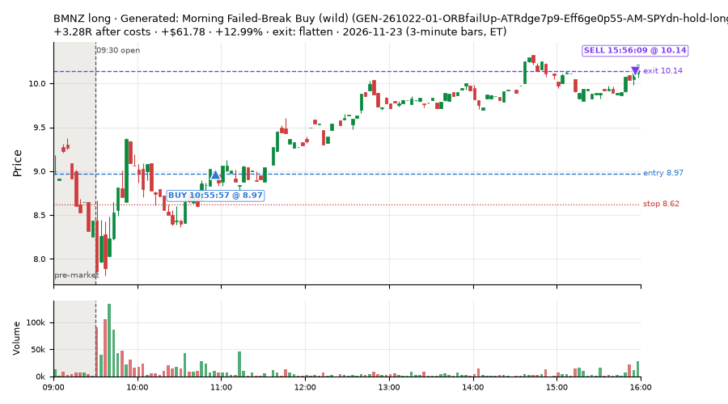
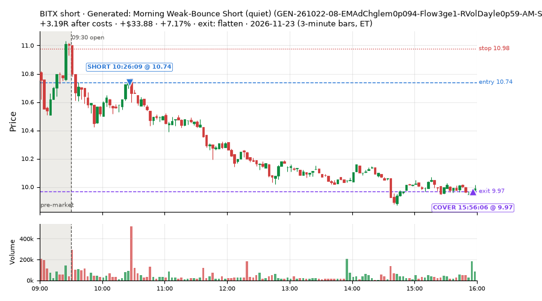
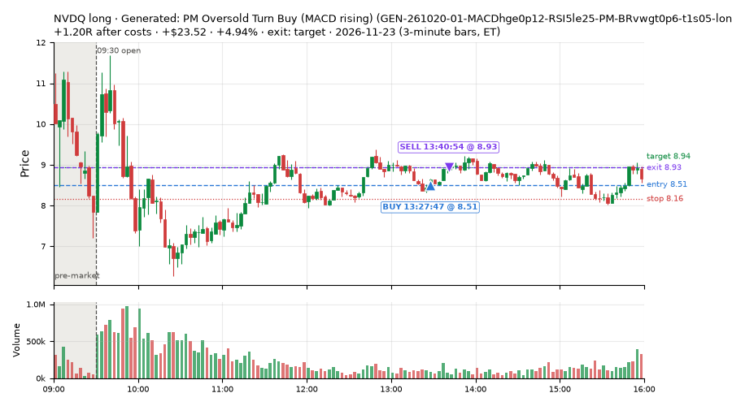
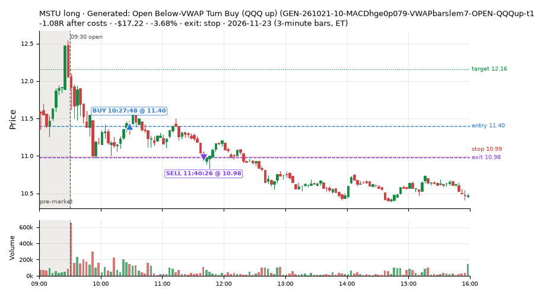
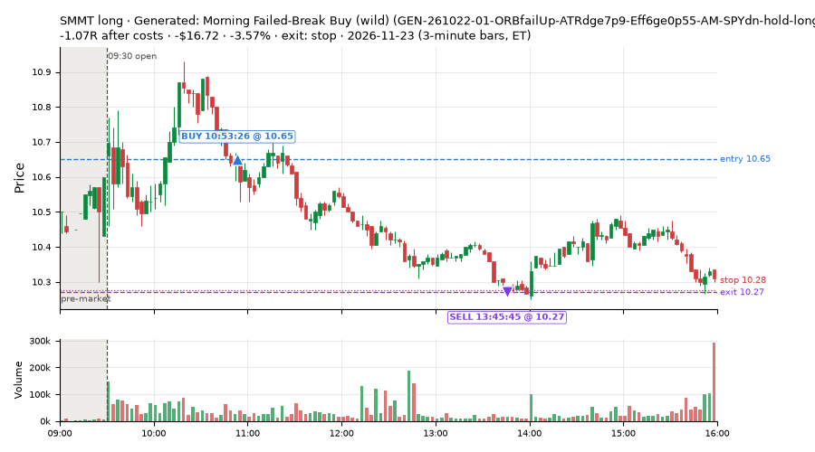
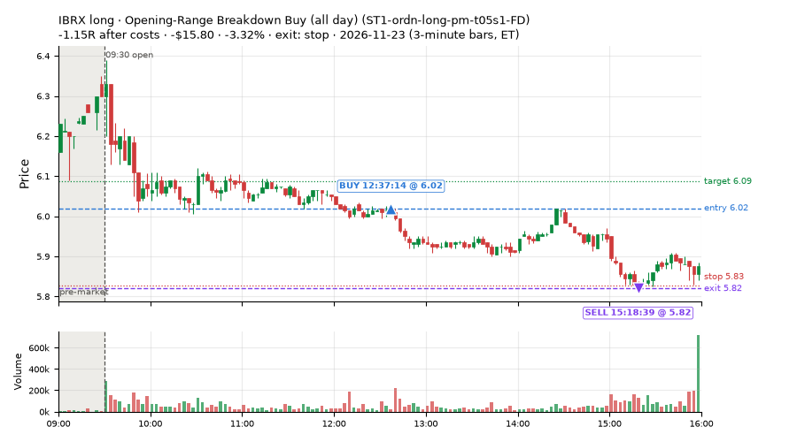
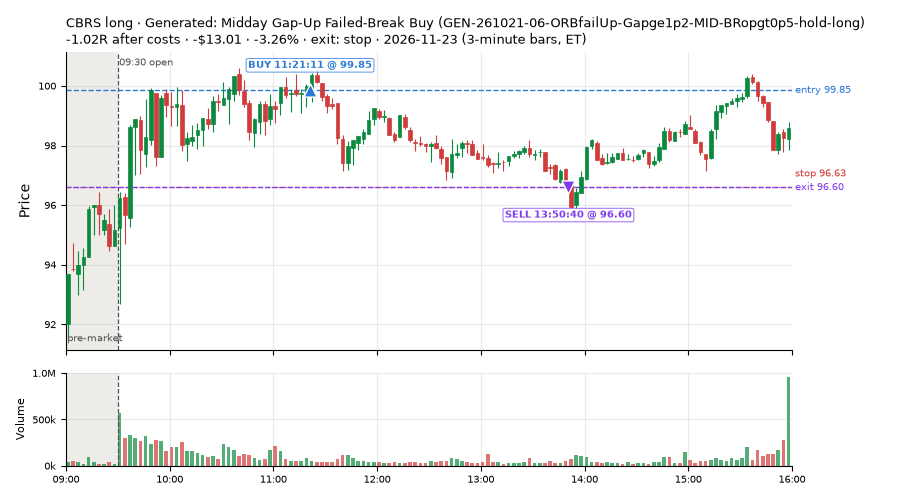
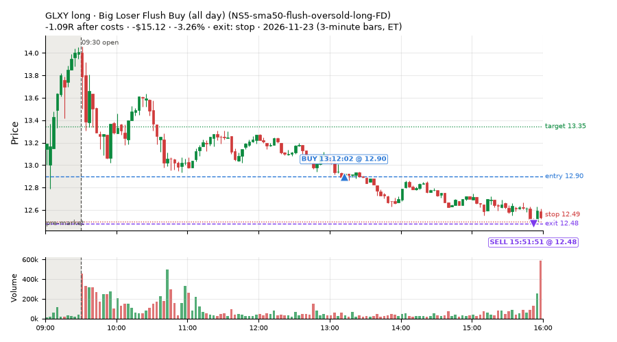

267 trades · win rate 52% · P/L $137.95
PROBATION: no live setup has passed both locked test periods. 10 owner-directed setups added 2026-10-08 (MarcoFlow top 5 + 5 new), untested live. RW6G1 (RW6 + VWAP band guard) added 2026-10-09, probation.

| Symbol | Setup | Side | In | Out | Entry | Exit | Exit reason | % gained | P/L |
|---|---|---|---|---|---|---|---|---|---|
| BMNZ | Generated: Morning Failed-Break Buy (wild) (GEN-261022-01-ORBfailUp-ATRdge7p9-Eff6ge0p55-AM-SPYdn-hold-long) | long | 10:55 | 15:56 | 8.97 | 10.14 | flatten | +12.99% | $61.78 |
| BITX | Generated: Morning Weak-Bounce Short (quiet) (GEN-261022-08-EMAdChglem0p094-Flow3ge1-RVolDayle0p59-AM-SPYgt0p25-holdtr-short) | short | 10:26 | 15:56 | 10.74 | 9.97 | flatten | +7.17% | $33.88 |
| NVDQ | Generated: PM Oversold Turn Buy (MACD rising) (GEN-261020-01-MACDhge0p12-RSI5le25-PM-BRvwgt0p6-t1s05-long) | long | 13:27 | 13:40 | 8.51 | 8.93 | target | +4.94% | $23.52 |
| Symbol | Setup | Side | In | Out | Entry | Exit | Exit reason | % lost | P/L |
|---|---|---|---|---|---|---|---|---|---|
| MSTU | GEN-261021-10-MACDhge0p079-VWAPbarslem7-OPEN-QQQup-t1s05-long | long | 10:27 | 11:40 | 11.40 | 10.98 | stop | -3.68% | $-17.22 |
| SMMT | GEN-261022-01-ORBfailUp-ATRdge7p9-Eff6ge0p55-AM-SPYdn-hold-long | long | 10:53 | 13:45 | 10.65 | 10.27 | stop | -3.57% | $-16.72 |
| IBRX | ST1-ordn-long-pm-t05s1-FD | long | 12:37 | 15:18 | 6.02 | 5.82 | stop | -3.32% | $-15.80 |
| CBRS | GEN-261021-06-ORBfailUp-Gapge1p2-MID-BRopgt0p5-hold-long | long | 11:21 | 13:50 | 99.85 | 96.60 | stop | -3.26% | $-13.01 |
| GLXY | NS5-sma50-flush-oversold-long-FD | long | 13:12 | 15:51 | 12.90 | 12.48 | stop | -3.26% | $-15.12 |








Signal to fill: median 2s, 90th percentile 3s (266 trades). Bars close each minute; the order follows the bar close.
Best excursion (MFE): median 0.55R; worst (MAE) median 0.56R. 27% of trades never got +0.25R in our favour; 4 reached +1R and still closed at or below 0.
| Symbol | Setup | Best R | Worst R | Closed R |
|---|---|---|---|---|
| QID | GEN-261020-01-MACDhge0p12-RSI5le25-PM-BRvwgt0p6-t1s05-long | +2.42 | -1.06 | -1.15 |
| LABD | GEN-261020-01-MACDhge0p12-RSI5le25-PM-BRvwgt0p6-t1s05-long | +1.38 | -1.03 | -1.41 |
| UBER | GEN-261021-06-ORBfailUp-Gapge1p2-MID-BRopgt0p5-hold-long | +0.66 | -1.14 | -1.15 |
| SPCH | NS5-sma50-flush-oversold-long-FD | +0.65 | -1.11 | -1.16 |
| CCJ | GEN-261021-10-MACDhge0p079-VWAPbarslem7-OPEN-QQQup-t1s05-long | +0.63 | -1.02 | -1.10 |
| Entry time | Trades | Win | Avg R | P/L |
|---|---|---|---|---|
| 09:50-10:30 | 44 | 75% | +0.70 | $155.02 |
| 10:30-11:30 | 109 | 44% | -0.16 | $-44.26 |
| 11:30-13:00 | 85 | 48% | -0.08 | $-70.66 |
| 13:00-14:00 | 16 | 69% | +0.74 | $94.51 |
| 14:00-16:00 | 13 | 54% | +0.04 | $3.34 |
| Setup | Trades | Win | Avg R after costs | Adj R (net of SPY) | Avg R ex-market (all sessions) | P/L |
|---|---|---|---|---|---|---|
| Failed Prior-Day-Low Break, SPY-Range Regime (long leg) (CWT14-failbrk-pdl-p05-R2A-long) | 16.0 | 62% | -0.03 | -0.09 | -0.08 (beta +0.27, n 16) | $-0.47 |
| Generated: PM Sharp-Drop Buy (in uptrend) (GEN-261019-03-Ret15mATRlem0p12-FromOpenATRlem0p34-SMA20slopege0p29-PM-BRoplt0p5-t05s1-long) | 3.0 | 100% | +0.38 | +0.38 | – | $12.61 |
| Generated: PM Oversold Turn Buy (MACD rising) (GEN-261020-01-MACDhge0p12-RSI5le25-PM-BRvwgt0p6-t1s05-long) | 11.0 | 73% | +1.08 | +1.20 | +0.09 (beta -5.41, n 11) | $98.90 |
| Generated: Lunch Wide-Range Short (SPY down) (GEN-261021-03-RSI5le34-Ret15mATRge0p12-DayRngVsPrevge1p2-LUNCH-SPYltm0p25-t05s1-short) | 1.0 | 100% | +0.36 | +0.47 | – | $4.35 |
| Generated: Midday Gap-Up Failed-Break Buy (GEN-261021-06-ORBfailUp-Gapge1p2-MID-BRopgt0p5-hold-long) | 51.0 | 37% | -0.43 | -0.07 | +0.13 (beta +2.09, n 51) | $-79.18 |
| Generated: Open Below-VWAP Turn Buy (QQQ up) (GEN-261021-10-MACDhge0p079-VWAPbarslem7-OPEN-QQQup-t1s05-long) | 7.0 | 14% | -0.75 | -0.36 | -0.08 (beta +1.30, n 7) | $-44.21 |
| Generated: Morning Failed-Break Buy (wild) (GEN-261022-01-ORBfailUp-ATRdge7p9-Eff6ge0p55-AM-SPYdn-hold-long) | 18.0 | 39% | -0.01 | +0.04 | -0.82 (beta -0.04, n 107) | $27.73 |
| Generated: Morning Weak-Bounce Short (quiet) (GEN-261022-08-EMAdChglem0p094-Flow3ge1-RVolDayle0p59-AM-SPYgt0p25-holdtr-short) | 24.0 | 96% | +1.50 | +0.99 | -1.81 (beta -5.96, n 24) | $205.91 |
| Generated: Late Failed-Breakdown Pop Short (GEN-261023-09-ORBfailDn-Ret15mge0p54-LATE-BRvwgt0p7-holdtr-short) | 3.0 | 33% | -0.23 | -0.35 | – | $-3.09 |
| Generated: Midday Volume Buy (volatile) (GEN-261027-05-VolRatioge1p5-ORLdistge0p41-ATRdge6-MID-BRvwgt0p7-t05s1-long) | 4.0 | 0% | -1.11 | -0.94 | – | $-24.85 |
| Generated: Midday Choppy Oversold Buy (GEN-261029-02-RSI2le0-VWAPcrossesge9-DayRngVsPrevle0p52-MID-BRvwlt0p4-hold-long) | 35.0 | 63% | +0.19 | -0.07 | -0.47 (beta +3.03, n 35) | $29.58 |
| Sellers into Strength (all day) (MF5-flowsell-vwapup-rsi5hi) owner-directed; holdouts once: Sep-Oct -0.001R n264, Apr-Jun -0.010R n1199 | 33.0 | 61% | +0.18 | -0.87 | -0.97 (beta -2.12, n 33) | $5.90 |
| Big Gainer Dip-and-Pop (all day) (NS1-rsidip-rsi5pop-long-FD) | 4.0 | 75% | +0.06 | -0.02 | +0.16 (beta +0.17, n 6) | $2.18 |
| Big Gainer Average Reclaim Fade (NS2-sma50break-overbought-short) owner-directed; holdouts once: Sep-Oct -0.115R n76, Apr-Jun +0.021R n587 | 4.0 | 50% | -0.18 | -0.22 | -0.10 (beta -0.63, n 22) | $-3.77 |
| Big Loser Flush Buy (all day) (NS5-sma50-flush-oversold-long-FD) | 15.0 | 13% | -0.44 | -0.61 | -0.17 (beta +0.92, n 83) | $-72.35 |
| Gap-Down Heavy-Selling Short, no RSI condition (all day) (RW3S-gapdn-flowsell-short-FD) | 11.0 | 36% | -0.30 | -0.52 | -0.15 (beta -0.60, n 220) | $-10.40 |
| Big Gainer Fade, VWAP Band Guard (all day) (RW6G1-ns2-up3-vwap2sd-short-FD) | 2.0 | 50% | -0.16 | -0.17 | +0.10 (beta -0.41, n 39) | $-0.52 |
| Opening-Range Breakdown Buy (all day) (ST1-ordn-long-pm-t05s1-FD) | 4.0 | 0% | -1.01 | -0.98 | -0.08 (beta +0.76, n 58) | $-46.95 |
| Afternoon Blow-off Short (all day) (exhaustion_short-FD) | 21.0 | 62% | +0.21 | +0.06 | +0.18 (beta -0.50, n 35) | $36.59 |
Market direction (SPY, beta 1) accounted for $113.22 of today's $137.95; the rest ($24.73) came from the setups themselves. Avg R net of SPY: -0.09 (incl. a hedge leg's cost; report only).
52 setups live today. Today: 496 signals, 267 taken, 6 lost because another setup held the symbol (1%). Since 2026-10-21 (24 sessions): 32980 signals, 10345 taken, 1370 lost to other setups (4%). Peak open positions today 185 of 300 slots. Earnings blackout removed 148 symbols before scanning.
Simulated playing time (not live): 22577 what-if trades of signals not taken, avg -0.04R, 55% winners; of them 1369 lost to another setup (avg -0.02R).
Silent: GEN-261020-05-ORBfailDn-VWAPcrossesge4-SMA20dlem0p31-LUNCH-SPYgt0p25-holdtr-long, GEN-261028-02-VWAPxDn-NewLOD-AM-QQQgt0p6-t1s1-long, GEN-261020-02-RSIslopelem19-BarRngATRge0p14-BuyPressge0p17-LATE-BRvwgt0p7-t05s1-short, GEN-261021-08-RSI2le0-Ret15mATRge0p16-ATRdge3p6-LUNCH-QQQgt0p6-holdtr-long, GEN-POD1022-01-thrasher-breadth-thrust-stocks-holdtr-long, CWT04-backside-vwaptest-a25-short, GEN-261023-01-VWAPxUp-VWAPatrge0p33-LAM-SPYgt0p5-t05s05-short, GEN-261023-05-NewLOD-SMA20dlem0p94-ORLdistlem0p24-PM-BRopgt0p65-hold-long, GEN-261029-10-RSIslopege19-Ret5mlem0p21-EMAdiffge0p29-OPEN-BRvwgt0p5-t1s1-short, GEN-261028-03-EMAdChgge0p15-VWAPxUp-Since950ATRlem0p43-LUNCH-SPYgt0p25-hold-long, GEN-261028-10-BarRngATRge0p18-Flow3lem0p54-FromPCATRge0p28-PM-SPYgt0p5-hold-long, GEN-261023-02-Ret15mATRlem0p068-EMAdChgge0p028-ATRdge6-PM-BRopgt0p65-hold-long, NM-RWR1-exh150-gapdn-spyup-pm-short, GEN-261022-02-ORBfailUp-EMAdChglem0p094-ADX7ge57-LATE-BRvwgt0p7-t05s1-long, GEN-261029-05-BearDiv-RSI14ge78-Compress6le0p091-AM-BRopgt0p5-t05s05-long, GEN-261021-07-VWAPxUp-ORBfailUp-AM-SPYgt0p5-hold-long · Crowded out: NS2-sma50break-overbought-short · Starved: exhaustion_short-FD, heat_fade_long-FD, heat_fade_short-FD, MF1-945-flowsell-vwapup-FD, heat_fade_long
| Prio | Setup | Today sig / taken | Sessions | Signals / taken / trades | Taken/day | Expected/day | Lost to other setups | Lost to (setup n) | Top skip reasons | SIMULATED: not-taken n / avg R / win | Verdict |
|---|---|---|---|---|---|---|---|---|---|---|---|
| 1 | Opening-Range Breakdown Buy (all day) ST1-ordn-long-pm-t05s1-FD | 11 / 4 | 24 | 98 / 58 / 58 | 2.42 | 3.49 | 2 | heat_fade_short-FD 1, NS3-failed-vwap-reclaim-short-FD 1 | spread / quote / size 25, daily loss cap 7, slots full 3 | 40 / -0.03R / 55% | slow 12.1 entries/week; ~5 weeks to 60 trades |
| 2 | Big Gainer Fade, VWAP Band Guard (all day) RW6G1-ns2-up3-vwap2sd-short-FD | 6 / 2 | 14 | 94 / 39 / 39 | 2.79 | 3.73 | 4 | RW6-ns2-up3-short-FD 3, NS2-sma50break-overbought-short-FD 2, RW6G1-ns2-up3-vwap2sd-short-FD 2 | not shortable / shorts off 40, symbol held by another setup 4, broker rejected 4 | 55 / +0.16R / 62% | slow 13.9 entries/week; ~4 weeks to 60 trades |
| 3 | Generated: Late Failed-Breakdown Pop Short GEN-261023-09-ORBfailDn-Ret15mge0p54-LATE-BRvwgt0p7-holdtr-short | 5 / 3 | 4 | 5 / 3 / 3 | 0.75 | – | 1 | CWT14-failbrk-pdl-p05-R2A-long 1 | symbol held by another setup 1, spread / quote / size 1 | 2 / +0.42R / 100% | slow 3.8 entries/week; ~16 weeks to 60 trades |
| 4 | Generated: Midday Oversold Short (quiet day) GEN-261028-06-RSI5le13-VWAPatrlem0p15-DayRngVsPrevle0p34-MID-BRoplt0p35-hold-short | 0 / 0 | 4 | 9 / 6 / 6 | 1.50 | – | 0 | – | daily loss cap 2, spread / quote / size 1 | 3 / -0.13R / 67% | slow 7.5 entries/week; ~8 weeks to 60 trades |
| 5 | Generated: Late-AM Divergence Short (quiet) GEN-261021-01-BearDiv-RVolDayle0p47-BarsSinceHODle0-LAM-SPYltm0p25-t1s1-short | 0 / 0 | 4 | 16 / 6 / 6 | 1.50 | – | 0 | – | other 6, spread / quote / size 3, not shortable / shorts off 1 | 10 / +0.10R / 60% | slow 7.5 entries/week; ~8 weeks to 60 trades |
| 6 | Generated: Lunch Failed Breakdown Buy GEN-261020-05-ORBfailDn-VWAPcrossesge4-SMA20dlem0p31-LUNCH-SPYgt0p25-holdtr-long | 0 / 0 | 3 | 0 / 0 / 0 | 0.00 | – | 0 | – | – | 0 / – | silent no signals in 3 session(s); no expected rate on file |
| 7 | Big Gainer Dip-and-Pop (all day) NS1-rsidip-rsi5pop-long-FD | 5 / 4 | 3 | 9 / 6 / 6 | 2.00 | 5.39 | 0 | – | daily loss cap 1, spread / quote / size 1, price through stop/target 1 | 3 / -0.54R / 33% | slow 10.0 entries/week; ~6 weeks to 60 trades |
| 8 | Afternoon Blow-off Short (all day) exhaustion_short-FD | 37 / 21 | 3 | 66 / 35 / 35 | 11.67 | 64.64 | 1 | GEN-261027-05-VolRatioge1p5-ORLdistge0p41-ATRdge6-MID-BRvwgt0p7-t05s1-long 1 | not shortable / shorts off 23, spread / quote / size 7, symbol held by another setup 1 | 31 / +0.24R / 58% | starved 11.67 entries/day vs ~64.64 expected |
| 9 | Sellers into Strength (all day) MF5-flowsell-vwapup-rsi5hi | 43 / 33 | 3 | 66 / 33 / 33 | 11.00 | 15.47 | 11 | MF5-flowsell-vwapup-rsi5hi-FD 10, MF3-open-flowsell-rsi5hi-FD 5, MF1-945-flowsell-vwapup-FD 2 | spread / quote / size 19, symbol held by another setup 11, not shortable / shorts off 2 | 33 / +0.45R / 76% | ok 55.0 entries/week |
| 10 | Generated: Morning VWAP-Loss Low Buy (QQQ up) GEN-261028-02-VWAPxDn-NewLOD-AM-QQQgt0p6-t1s1-long | 0 / 0 | 3 | 0 / 0 / 0 | 0.00 | – | 0 | – | – | 0 / – | silent no signals in 3 session(s); no expected rate on file |
| 11 | Generated: PM Oversold Turn Buy (MACD rising) GEN-261020-01-MACDhge0p12-RSI5le25-PM-BRvwgt0p6-t1s05-long | 13 / 11 | 1 | 13 / 11 / 11 | 11.00 | – | 0 | – | spread / quote / size 1, price through stop/target 1 | 2 / +0.03R / 50% | ok 55.0 entries/week |
| 12 | Stretched Above VWAP Fade (far) CWT13-vwapstretch-z075-short | 3 / 0 | 1 | 3 / 0 / 0 | 0.00 | – | 0 | – | not shortable / shorts off 2, spread / quote / size 1 | 3 / -1.22R / 0% | slow no entries yet |
| 13 | Failed Prior-Day-Low Break, SPY-Range Regime (short leg) CWT14-failbrk-pdl-p05-R2A-short | 0 / 0 | 1 | 0 / 0 / 0 | 0.00 | – | 0 | – | – | 0 / – | quiet - wait no signals in 1 session(s); too early to tell |
| 14 | Generated: PM Failed-Breakdown Buy GEN-261026-10-ORBfailDn-EMAdChglem0p051-PM-BRopgt0p65-t1s1-long | 0 / 0 | 1 | 0 / 0 / 0 | 0.00 | – | 0 | – | – | 0 / – | quiet - wait no signals in 1 session(s); too early to tell |
| 15 | Generated: PM Sharp-Drop Buy (in uptrend) GEN-261019-03-Ret15mATRlem0p12-FromOpenATRlem0p34-SMA20slopege0p29-PM-BRoplt0p5-t05s1-long | 3 / 3 | 1 | 3 / 3 / 3 | 3.00 | – | 0 | – | – | 0 / – | ok 15.0 entries/week |
| 16 | Big Gainer Average Reclaim Fade NS2-sma50break-overbought-short | 4 / 4 | 24 | 271 / 22 / 22 | 0.92 | 5.74 | 129 | NS2-sma50break-overbought-short-FD 115, RW6-ns2-up3-short-FD 56, CWT12-coil-k4-long 10 | symbol held by another setup 129, spread / quote / size 65, not shortable / shorts off 33 | 249 / +0.39R / 75% | crowded-out 129 of 271 signals (48%) lost to setups already holding the symbol |
| 17 | Big Loser Flush Buy (all day) NS5-sma50-flush-oversold-long-FD | 16 / 15 | 14 | 138 / 83 / 83 | 5.93 | 6.32 | 9 | NS3-failed-vwap-reclaim-short-FD 4, RW4-ns3-adv150-short-FD 4, ST4-emadn-long-am-t1s05-FD 1 | daily loss cap 26, spread / quote / size 12, symbol held by another setup 9 | 55 / -0.03R / 49% | ok 29.6 entries/week |
| 18 | Gap-Down Heavy-Selling Short, no RSI condition (all day) RW3S-gapdn-flowsell-short-FD | 35 / 11 | 6 | 976 / 220 / 220 | 36.67 | – | 14 | CWT12-coil-k4-long 3, GEN-261019-05-RSIslopelem9-PDLdistle0p14-EMAdifflem0p46-OPEN-SPYltm0p5-t1s1-long 3, CWT14-failbrk-pdl-p05-long 2 | daily loss cap 490, spread / quote / size 189, not shortable / shorts off 59 | 756 / +0.39R / 74% | ok 183.3 entries/week |
| 19 | Generated: Late Uptrend Dip Buy (up day) GEN-261026-09-BBpctle0p3-SMA20slopege0p46-FromPCATRge0p45-LATE-BRvwgt0p6-t05s05-long | 0 / 0 | 4 | 1 / 1 / 1 | 0.25 | – | 0 | – | – | 0 / – | slow 1.2 entries/week; ~48 weeks to 60 trades |
| 20 | Generated: Late RSI Drop Short (big bar) GEN-261020-02-RSIslopelem19-BarRngATRge0p14-BuyPressge0p17-LATE-BRvwgt0p7-t05s1-short | 0 / 0 | 4 | 0 / 0 / 0 | 0.00 | – | 0 | – | – | 0 / – | silent no signals in 4 session(s); no expected rate on file |
| 21 | Generated: Lunch RSI(2) Flush Buy (volatile) GEN-261021-08-RSI2le0-Ret15mATRge0p16-ATRdge3p6-LUNCH-QQQgt0p6-holdtr-long | 0 / 0 | 4 | 0 / 0 / 0 | 0.00 | – | 0 | – | – | 0 / – | silent no signals in 4 session(s); no expected rate on file |
| 22 | Podcast: Breadth Thrust, Strong Large Caps (observation) GEN-POD1022-01-thrasher-breadth-thrust-stocks-holdtr-long | 0 / 0 | 4 | 0 / 0 / 0 | 0.00 | – | 0 | – | – | 0 / – | silent no signals in 4 session(s); no expected rate on file |
| 23 | Backside VWAP-Test Short (big runner) CWT04-backside-vwaptest-a25-short | 0 / 0 | 4 | 0 / 0 / 0 | 0.00 | – | 0 | – | – | 0 / – | silent no signals in 4 session(s); no expected rate on file |
| 24 | Generated: Late-AM VWAP Pop Short (SPY up) GEN-261023-01-VWAPxUp-VWAPatrge0p33-LAM-SPYgt0p5-t05s05-short | 0 / 0 | 4 | 0 / 0 / 0 | 0.00 | – | 0 | – | – | 0 / – | silent no signals in 4 session(s); no expected rate on file |
| 25 | Generated: PM New-Low Buy (strong mkt) GEN-261023-05-NewLOD-SMA20dlem0p94-ORLdistlem0p24-PM-BRopgt0p65-hold-long | 0 / 0 | 4 | 0 / 0 / 0 | 0.00 | – | 0 | – | – | 0 / – | silent no signals in 4 session(s); no expected rate on file |
| 26 | Generated: Open Below-VWAP Turn Buy (QQQ up) GEN-261021-10-MACDhge0p079-VWAPbarslem7-OPEN-QQQup-t1s05-long | 24 / 7 | 4 | 24 / 7 / 7 | 1.75 | – | 0 | – | other 11, spread / quote / size 6 | 17 / -1.18R / 0% | slow 8.8 entries/week; ~7 weeks to 60 trades |
| 27 | Generated: Open RSI Pop Reversal Short GEN-261029-10-RSIslopege19-Ret5mlem0p21-EMAdiffge0p29-OPEN-BRvwgt0p5-t1s1-short | 0 / 0 | 4 | 0 / 0 / 0 | 0.00 | – | 0 | – | – | 0 / – | silent no signals in 4 session(s); no expected rate on file |
| 28 | Generated: Lunch VWAP Reclaim Buy GEN-261028-03-EMAdChgge0p15-VWAPxUp-Since950ATRlem0p43-LUNCH-SPYgt0p25-hold-long | 0 / 0 | 4 | 0 / 0 / 0 | 0.00 | – | 0 | – | – | 0 / – | silent no signals in 4 session(s); no expected rate on file |
| 29 | Generated: PM Big Red Bar Buy (up day) GEN-261028-10-BarRngATRge0p18-Flow3lem0p54-FromPCATRge0p28-PM-SPYgt0p5-hold-long | 0 / 0 | 4 | 0 / 0 / 0 | 0.00 | – | 0 | – | – | 0 / – | silent no signals in 4 session(s); no expected rate on file |
| 30 | Generated: PM Volatile Dip Buy (strong mkt) GEN-261023-02-Ret15mATRlem0p068-EMAdChgge0p028-ATRdge6-PM-BRopgt0p65-hold-long | 0 / 0 | 4 | 0 / 0 / 0 | 0.00 | – | 0 | – | – | 0 / – | silent no signals in 4 session(s); no expected rate on file |
| 31 | Afternoon Exhaustion Short, Gap-Down, SPY Up (near-miss) NM-RWR1-exh150-gapdn-spyup-pm-short | 0 / 0 | 4 | 0 / 0 / 0 | 0.00 | – | 0 | – | – | 0 / – | silent no signals in 4 session(s); no expected rate on file |
| 32 | Generated: Late Failed-Breakout Buy (trend) GEN-261022-02-ORBfailUp-EMAdChglem0p094-ADX7ge57-LATE-BRvwgt0p7-t05s1-long | 0 / 0 | 4 | 0 / 0 / 0 | 0.00 | – | 0 | – | – | 0 / – | silent no signals in 4 session(s); no expected rate on file |
| 33 | Prior-Day Low Sweep Reversal to VWAP LIQ-pdl-sweep-open15-vwap-long | 0 / 0 | 4 | 2 / 1 / 1 | 0.25 | – | 0 | – | daily loss cap 1 | 1 / -1.06R / 0% | slow 1.2 entries/week; ~48 weeks to 60 trades |
| 34 | Generated: Lunch Wide-Range Short (SPY down) GEN-261021-03-RSI5le34-Ret15mATRge0p12-DayRngVsPrevge1p2-LUNCH-SPYltm0p25-t05s1-short | 1 / 1 | 4 | 15 / 2 / 2 | 0.50 | – | 0 | – | not shortable / shorts off 10, spread / quote / size 3 | 13 / -0.21R / 54% | slow 2.5 entries/week; ~24 weeks to 60 trades |
| 35 | Generated: Morning Overbought Coil Buy GEN-261029-05-BearDiv-RSI14ge78-Compress6le0p091-AM-BRopgt0p5-t05s05-long | 0 / 0 | 4 | 0 / 0 / 0 | 0.00 | – | 0 | – | – | 0 / – | silent no signals in 4 session(s); no expected rate on file |
| 36 | Generated: Morning Overbought Drop Short GEN-261029-08-Ret15mlem0p36-Flow3lem0p54-RSI14ge65-AM-SPYgt0p5-hold-short | 0 / 0 | 2 | 0 / 0 / 0 | 0.00 | – | 0 | – | – | 0 / – | quiet - wait no signals in 2 session(s); too early to tell |
| 37 | Generated: Morning RSI Surge Buy GEN-261020-07-RSIslopege19-LowWickge0p33-ATRdge4p4-AM-BRvwgt0p7-hold-long | 0 / 0 | 3 | 15 / 9 / 9 | 3.00 | – | 1 | NS2-sma50break-overbought-short 1 | spread / quote / size 5, symbol held by another setup 1 | 6 / -1.05R / 0% | ok 15.0 entries/week |
| 38 | Generated: Midday Gap-Up Failed-Break Buy GEN-261021-06-ORBfailUp-Gapge1p2-MID-BRopgt0p5-hold-long | 128 / 51 | 3 | 128 / 51 / 51 | 17.00 | – | 2 | exhaustion_short-FD 1, MF5-flowsell-vwapup-rsi5hi 1 | other 65, spread / quote / size 10, symbol held by another setup 2 | 77 / -0.79R / 8% | ok 85.0 entries/week |
| 39 | Generated: Morning Selling-Burst Buy GEN-261028-09-FlowShiftlem0p65-ADX7le23-AM-BRoplt0p35-t05s1-long | 0 / 0 | 3 | 31 / 20 / 20 | 6.67 | – | 1 | RW3S-gapdn-flowsell-short-FD 1 | spread / quote / size 10, symbol held by another setup 1 | 11 / -0.01R / 73% | ok 33.3 entries/week |
| 40 | Generated: Morning VWAP Reclaim Buy (SPY up) GEN-261021-07-VWAPxUp-ORBfailUp-AM-SPYgt0p5-hold-long | 0 / 0 | 3 | 0 / 0 / 0 | 0.00 | – | 0 | – | – | 0 / – | silent no signals in 3 session(s); no expected rate on file |
| 41 | Generated: Lunch Tight-Range Pop Buy GEN-261028-08-Ret5mge0p21-SMA20dlem0p16-Compress6le0p11-LUNCH-BRoplt0p35-holdtr-long | 0 / 0 | 3 | 120 / 25 / 25 | 8.33 | – | 2 | MF2-open-rsimidhi-flowsell-FD 1, MF4-h40-open-flowsell-FD 1 | daily loss cap 86, spread / quote / size 6, symbol held by another setup 2 | 95 / -0.58R / 15% | ok 41.7 entries/week |
| 42 | Generated: Midday Volume Buy (volatile) GEN-261027-05-VolRatioge1p5-ORLdistge0p41-ATRdge6-MID-BRvwgt0p7-t05s1-long | 5 / 4 | 3 | 5 / 4 / 4 | 1.33 | – | 0 | – | spread / quote / size 1 | 1 / -1.05R / 0% | slow 6.7 entries/week; ~9 weeks to 60 trades |
| 43 | Generated: Morning Failed-Break Buy (wild) GEN-261022-01-ORBfailUp-ATRdge7p9-Eff6ge0p55-AM-SPYdn-hold-long | 33 / 18 | 3 | 222 / 107 / 107 | 35.67 | – | 1 | MF4-h40-open-flowsell-FD 1 | spread / quote / size 101, daily loss cap 10, other 2 | 115 / -0.78R / 11% | ok 178.3 entries/week |
| 44 | Generated: Midday Low Bounce Buy (MACD up) GEN-261020-03-MACDhge0p079-BarsSinceLODle5-MID-BRvwlt0p3-t05s05-long | 0 / 0 | 1 | 0 / 0 / 0 | 0.00 | – | 0 | – | – | 0 / – | quiet - wait no signals in 1 session(s); too early to tell |
| 45 | Failed Prior-Day-Low Break, SPY-Range Regime (long leg) CWT14-failbrk-pdl-p05-R2A-long | 33 / 16 | 1 | 33 / 16 / 16 | 16.00 | – | 0 | – | spread / quote / size 17 | 17 / +0.03R / 71% | ok 80.0 entries/week |
| 46 | Generated: Midday Choppy Oversold Buy GEN-261029-02-RSI2le0-VWAPcrossesge9-DayRngVsPrevle0p52-MID-BRvwlt0p4-hold-long | 52 / 35 | 1 | 52 / 35 / 35 | 35.00 | – | 0 | – | other 13, spread / quote / size 4 | 17 / +0.40R / 71% | ok 175.0 entries/week |
| 47 | Generated: PM New-Low Buy (failed breakout) GEN-261022-06-NewLOD-ORBfailUp-BuyPresslem0p49-PM-SPYltm0p5-t1s1-long | 0 / 0 | 1 | 0 / 0 / 0 | 0.00 | – | 0 | – | – | 0 / – | quiet - wait no signals in 1 session(s); too early to tell |
| 48 | Index Last-Half-Hour Momentum intraday_momentum | 4 / 0 | 1 | 4 / 0 / 0 | 0.00 | 2.37 | 1 | MF5-flowsell-vwapup-rsi5hi 1 | spread / quote / size 3, symbol held by another setup 1 | 4 / -0.47R / 0% | slow no entries yet |
| 49 | Generated: Late-AM Gap-Up Failed-Break Short GEN-261027-09-ORBfailDn-Gapge2-Slope6ge0p03-LAM-BRvwlt0p5-t05s05-short | 0 / 0 | 1 | 0 / 0 / 0 | 0.00 | – | 0 | – | – | 0 / – | quiet - wait no signals in 1 session(s); too early to tell |
| 50 | Generated: Morning Weak-Bounce Short (quiet) GEN-261022-08-EMAdChglem0p094-Flow3ge1-RVolDayle0p59-AM-SPYgt0p25-holdtr-short | 35 / 24 | 1 | 35 / 24 / 24 | 24.00 | – | 0 | – | spread / quote / size 9, not shortable / shorts off 2 | 11 / +0.63R / 91% | ok 120.0 entries/week |
| 51 | Panic Flush Reversal (3x volume) CWT05-flush-m05-v3-long | 0 / 0 | 1 | 0 / 0 / 0 | 0.00 | – | 0 | – | – | 0 / – | quiet - wait no signals in 1 session(s); too early to tell |
| 52 | Generated: Midday Failed-Breakout Low Buy GEN-261027-06-ORBfailUp-BarsSinceLODle5-MID-BRoplt0p35-holdtr-long | 0 / 0 | 1 | 0 / 0 / 0 | 0.00 | – | 0 | – | – | 0 / – | quiet - wait no signals in 1 session(s); too early to tell |
Every trade is attached as a CSV you can open and edit in Excel or Google Sheets. Live page: https://misiti15.github.io/MCF/live/